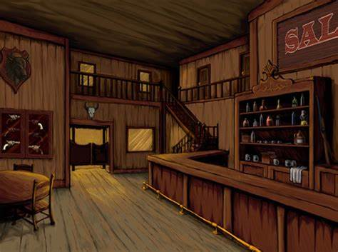

Durante uma tarde ensolarada no Velho-Oeste americano...
Um grupo de Foras da Lei bebem tranquilamente na taverna até que o xerife e seus homens chegam ao local
voce pode escolher entre ser o:

-
Barman
-
Fora da Lei
-
Xerife